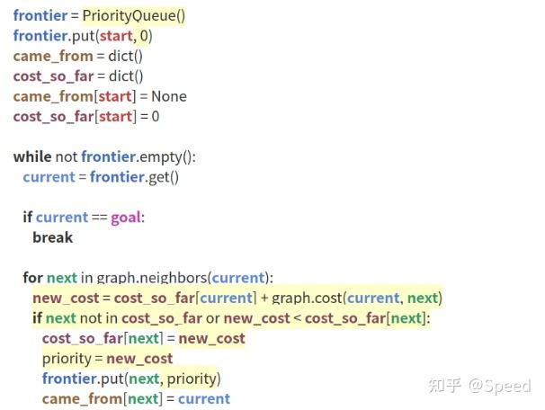

针对可以表示成图（Graph），即包括节点（node）和边（edge）的地图，可以使用搜索的方法找到从起始点到终点最短的一条路径。
将起始点作为边界，向相邻节点搜索，将新探索点作为边界，在下一轮作为中心点，继续对相邻节点进行探索，直到终点作为中心点时结束。探索的顺序是先进入边界队列的，在下一轮中优先被探索。
在这个算法中：
frontier是一个队列，用于存储待探索的节点came_from是一个映射，用于记录每个节点的来源，便于回溯路径由于 BFS 算法是按照"先入先出"顺序探索节点，无法在边长不一时找到最短路径。就采用计算出发点到探索点的距离作为探索优先级，到出发点距离越短的点，优先级越高，最先被探索。

算法中：
cost_so_far计算原点到当前节点距离，并将其作为被探索点的优先级，并按照此优先级作为探索顺序。cost_so_far改变时，该点即使探索过了，依然会再次进入边界队列。为了减少探索次数，将探索顺序换成距离目标最近的点，优先级最高，最先被探索，该方法效率高，但不一定是最优路径。

heuristic就是当前点与目标的距离（可以是欧式距离或曼哈顿距离）结合 GBFS 和 Dijkstra 算法，即保证最优性（路径最短）又保证探索效率，将探索顺序换成到起始点距离加上到终点距离作为优先级
 !
!